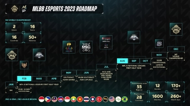

ML NUSANTARA
Berikut cara daftar turnamen ML Nusantara 2021-2023 beserta link Google Form nya. Pada bulan Mei tahun 2023, ML Nusantara Series telah dibuka. Mari bersiap-siap dan ajak tim kalian untuk bergabung dalam pertarungan ini untuk meraih impian menjadi seorang master Mobile legends.
Turnamen by PXYZXUN ID S51
Turnamen Mobile Legends - PYZXUN ID S51 dimulai tanggal 4 - 5 September 2023 Pendaftaran akan ditutup tanggal 4 - 5 September 2023
TUR - JOSS PROJECT s4

Turnamen Mobile Legends - JOSS PROJECT S4 dimulai tanggal 1 September 2023 Pendaftaran akan ditutup tanggal 1 September 2023
Mobile Legends - INMORTAL.ID BRAWL S2

Turnamen Mobile Legends - INMORTAL.ID BRAWL S2 dimulai tanggal 31 Agustus 2023 Pendaftaran akan ditutup tanggal 31 Agustus 2023